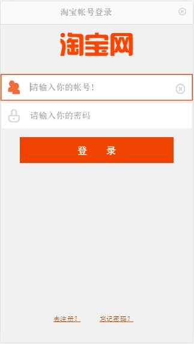
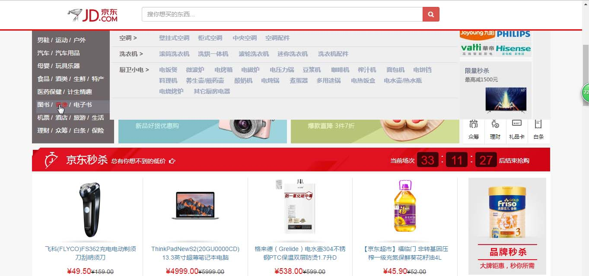
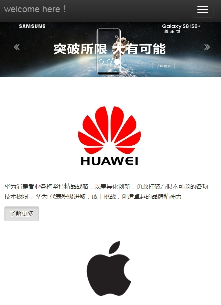
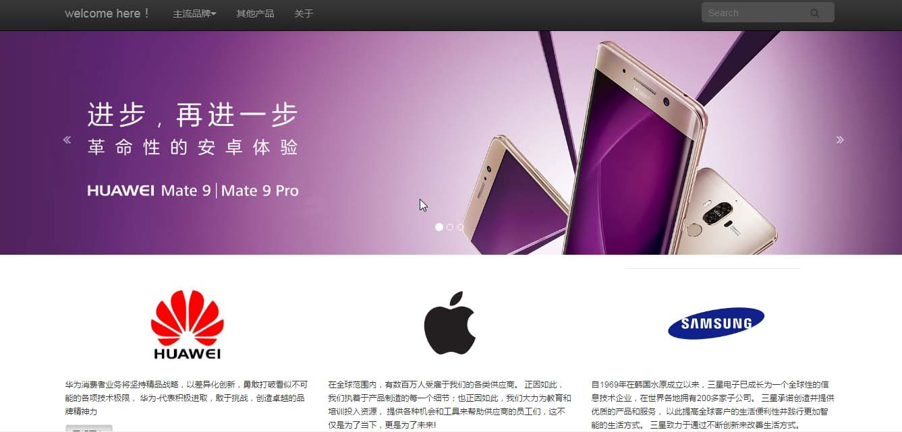
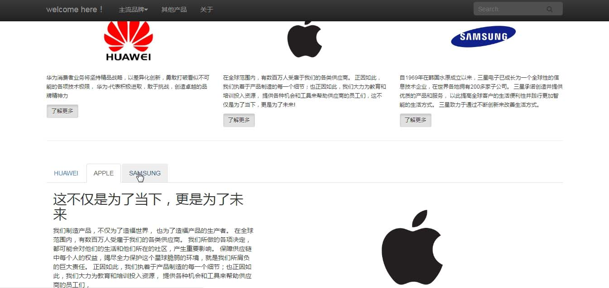

叶沛瑜
广州大学环境科学专业
2016届毕业生
求职：前端开发岗位
电话：13710211316
邮箱：654605047@qq.com
*志于成为出色的前端工程师！
教育经历：
* 2012-2016年广州大学完成本科学习；
* 2015年曾到台湾义守大学交流学习半年；
工作经历：
* 2016年1月至12月佛山英拜科技检测有限公司任职化工技术员，
期间负责操作多台大型检测仪器、完成化学实验、编写实验报告；
*熟悉运用html5/CSS3、Javascript等前端技术，能够编写原生js代码；
*熟悉运用JS相关框架，如jQuery、Bootstrap；
*熟悉运用Webstorm、Photoshop及Illustrator网页制作软件；
*熟悉移动端设备的页面适配问题。
*了解git及svn版本管理工具的应用；
*了解Angular Js框架；
*了解跨浏览器的兼容性问题，有一定的解决思路；
html5/css3
掌握
JS / jquery
掌握
bootstrap
掌握
PS / AI
掌握
AutoCad
掌握

技术采用:
html5 css3 jQuery javascript
项目描述:
仿照淘宝移动端官网
技术实现:
*利用html5/css3实现页面，高度还原效果图；
*利用javascript以及jQuery，实现动态交互效果：
如编写jQuery代码实现图片轮播及点击事件切换页面，
原生javascript代码实现倒计时效果；
*利用rem作为主要尺寸单位，以适配不同移动端设备的宽度；
项目收获:
*熟练原生javascript，jQuery的使用；
*熟练运用html5/css3实现页面效果；
*熟悉w3c标准，解决常见移动端设备的兼容性问题；
仿京东pc端首页

技术采用:
html5 css3 jQuery javascript bootstrap Angular.js
项目描述:
仿照京东PC端官网
技术实现:
*利用html5/css3实现页面，高度还原效果图；
*利用javascript以及jQuery，实现动态交互效果：
如编写jQuery代码实现图片轮播、animate动画等，
原生javascript代码实现倒计时效果；
*利用bootstrap栅格系统进行页面布局；
*利用Angular.js完成注册页面的表单验证；
项目收获:
*熟练原生javascript，jQuery的使用；
*熟悉bootstrap栅格系统的使用；
*掌握Angular.js实现表单验证的方法；
*熟悉w3c标准，解决跨浏览器的兼容性问题；



技术采用:
html5 css3 bootstrap
项目描述:
自编手机品牌介绍
技术实现:
*利用html5/css3实现页面效果图。
*利用bootstrap流式栅格系统，根据窗口宽度变化，
实现自响应式布局；
*利用bootstrap自带组件，实现tab选项卡导航效果；
*利用bootstrap自带插件，实现图片轮播效果；
项目收获:
*熟悉运用bootstrap，高效完成网页布局。